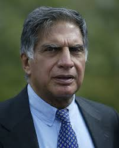

Main Content
A. P. J. Abdul Kalam

A.P.J. Abdul Kalam was born on October 15, 1931, in Rameswaram, India, and he was an influential Indian aerospace scientist and politician. He served as the 11th President of India from 2002 to 2007. Kalam played a pivotal role in India's civilian space program and military missile development efforts. He was known for his significant contributions to the development of the Indian space and defense technologies. After his presidency, he continued to inspire students and young minds through his lectures and writings until his death on July 27, 2015, in Shillong.
Ratan Naval Tata
Ratan Naval Tata was an Indian industrialist and philanthropist born on December 28, 1937, and he passed away on October 9, 2024. He served as the chairman of Tata G roup and Tata Sons from 1990 until his retirement in 2012. He was a significant figure in the expansion of the Tata Group, diversifying it into various industries and enhancing its global presence. Born to Naval and Soonoo Tata, Ratan Tata was raised by his grandmother, Navajbai R Tata. he is remembered for introducing initiatives that focused on
Sundar Pichai
Sundar Pichai, born on June 10, 1972, in Madras (now Chennai), Tamil Nadu, India, is an Indian-born American business executive . He is well-known as the Chief Executive Officer (CEO) of Alphabet Inc. and its subsidiary Google. Pichai joined Google in 2004, where he initially worked on Google Toolbar and later led the development of Google Chrome. In August 2015, he was appointed CEO of Google, and in December 2019, he became the CEO of Alphabet Inc. Pichai has been recognized for his leadership in the tech industry and his significant contributions to Google's product ecosystem.